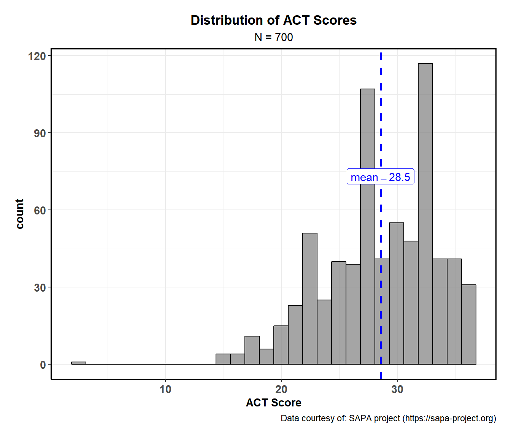
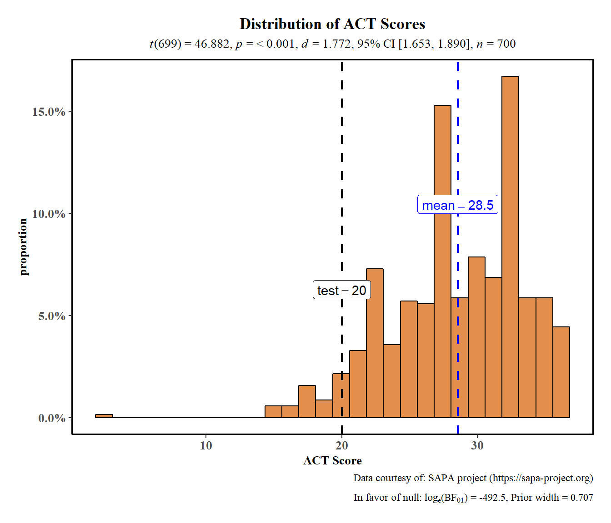

The function ggstatsplot::gghistostats can be used for data exploration and to provide an easy way to make publication-ready histograms with appropriate and selected statistical details embedded in the plot itself. In this vignette we will explore several examples of how to use it.
Some instances where you would want to use gghistostats-
- to inspect distribution of a continuous variable
- to test if the mean of a sample variable is different from a specified value (population parameter)
Distribution of a sample with gghistostats
Let’s begin with a very simple example from the psych package (psych::sat.act), a sample of 700 self-reported scores on the SAT Verbal, SAT Quantitative and ACT tests. ACT composite scores may range from 1 - 36. National norms have a mean of 20.
# loading needed libraries
library(ggstatsplot)
library(psych)
library(dplyr)
# looking at the structure of the data using glimpse
dplyr::glimpse(x = psych::sat.act)
#> Observations: 700
#> Variables: 6
#> $ gender <int> 2, 2, 2, 1, 1, 1, 2, 1, 2, 2, 1, 2, 1, 2, 2, 2, 2, 2...
#> $ education <int> 3, 3, 3, 4, 2, 5, 5, 3, 4, 5, 3, 4, 4, 4, 3, 4, 3, 4...
#> $ age <int> 19, 23, 20, 27, 33, 26, 30, 19, 23, 40, 23, 34, 32, ...
#> $ ACT <int> 24, 35, 21, 26, 31, 28, 36, 22, 22, 35, 32, 29, 21, ...
#> $ SATV <int> 500, 600, 480, 550, 600, 640, 610, 520, 400, 730, 76...
#> $ SATQ <int> 500, 500, 470, 520, 550, 640, 500, 560, 600, 800, 71...To get a simple histogram with no statistics and no special information. gghistostats will by default choose a binwidth max(x) - min(x) / sqrt(N). You should always check this value and explore multiple widths to find the best to illustrate the stories in your data since histograms are sensitive to binwidth.
ggstatsplot::gghistostats(
data = psych::sat.act, # data from which variable is to be taken
x = ACT, # numeric variable
results.subtitle = FALSE, # don't run statistical tests
messages = FALSE, # turn off messages
xlab = "ACT Score", # x-axis label
title = "Distribution of ACT Scores", # title for the plot
subtitle = "N = 700", # subtitle for the plot
caption = "Data courtesy of: SAPA project (https://sapa-project.org)", # caption for the plot
centrality.k = 1 # show 1 decimal places for centrality label
)
Statistical analysis with gghistostats
The authors note that “the score means are higher than national norms suggesting both self selection for people taking on line personality and ability tests and a self reporting bias in scores.” Let’s display the national norms (labeled as “Test”) and test (using results.subtitle = TRUE) the hypothesis that our sample mean is the same as our national population mean of 20 using a parametric one sample t-test (type = "p"). To demonstrate some of the options available we’ll also:
- Change the overall theme with
ggtheme = ggthemes::theme_tufte() - Make the histogram bars a different color with
bar.fill = "#D55E00" - Plot proportions on the y axes with
bar.measure = "proportion" - Turn messages on to receive additional diagnostic information with
messages = TRUE - Compute information about the Bayes Factor (
bf.message = TRUE, see below)
ggstatsplot::gghistostats(
data = psych::sat.act, # data from which variable is to be taken
x = ACT, # numeric variable
results.subtitle = TRUE, # run statistical tests
messages = TRUE, # turn on messages
bar.measure = "proportion", # proportions
xlab = "ACT Score", # x-axis label
title = "Distribution of ACT Scores", # title for the plot
type = "p", # one sample t-test
bf.message = TRUE, # display Bayes method results
ggtheme = ggthemes::theme_tufte(), # changing default theme
bar.fill = "#D55E00", # change fill color
test.value = 20, # test value
test.value.line = TRUE, # show a vertical line at `test.value`
caption = "Data courtesy of: SAPA project (https://sapa-project.org)", # caption for the plot
centrality.k = 1 # show 1 decimal places for centrality label
)
#> Note: Shapiro-Wilk Normality Test for ACT : p-value = < 0.001
gghistostats computed Bayes Factors to quantify the likelihood of the research (BF10) and the null hypothesis (BF01). In our current example, the Bayes Factor value provides very strong evidence (Kass and Rafferty, 1995) in favor of the research hypothesis: these ACT scores are much higher than the national average. The log(Bayes factor) of 492.5 means the odds are 7.54e+213:1 that this sample is different.
Grouped analysis with grouped_gghistostats
What if we want to do the same analysis separately for each gender? In that case, we will have to either write a for loop or use purrr, none of which seem like an exciting prospect.
ggstatsplot provides a special helper function for such instances: grouped_gghistostats. This is merely a wrapper function around ggstatsplot::combine_plots. It applies gghistostats across all levels of a specified grouping variable and then combines the individual plots into a single plot. Note that the grouping variable can be anything: conditions in a given study, groups in a study sample, different studies, etc.
Let’s see how we can use this function to apply gghistostats to accomplish our task.
ggstatsplot::grouped_gghistostats(
# arguments relevant for ggstatsplot::gghistostats
data = psych::sat.act, # same dataset
x = ACT, # same outcome variable
xlab = "ACT Score",
grouping.var = gender, # grouping variable males = 1, females = 2
title.prefix = "Gender", # prefix for the fixed title
k = 1, # number of decimal places in results
type = "r", # robust test: one-sample percentile bootstrap
robust.estimator = "mom", # changing the robust estimator used
test.value = 20, # test value against which sample mean is to be compared
test.value.line = TRUE, # show a vertical line at `test.value`
bar.measure = "density", # density
centrality.para = "median", # plotting centrality parameter
centrality.color = "#D55E00", # color for centrality line and label
test.value.color = "#009E73", # color for test line and label
messages = FALSE, # turn off messages
ggtheme = ggthemes::theme_stata(), # changing default theme
ggstatsplot.layer = FALSE, # turn off ggstatsplot theme layer
# arguments relevant for ggstatsplot::combine_plots
title.text = "Distribution of ACT scores across genders",
caption.text = "Data courtesy of: SAPA project (https://sapa-project.org)",
nrow = 2,
ncol = 1,
labels = c("Male","Female")
)
#> Note: 95% CI for robsut location measure median, Huber Psi computed with 500 bootstrap samples.Note: 95% CI for robsut location measure median, Huber Psi computed with 500 bootstrap samples.
As can be seen from these plots, the mean value is much higher than the national norm. Additionally, we see the benefits of plotting this data separately for each gender. We can see the differences in distributions.
Grouped analysis with purrr
Although this is a quick and dirty way to explore a large amount of data with minimal effort, it does come with an important limitation: reduced flexibility. For example, if we wanted to add, let’s say, a separate test.value argument for each gender, this is not possible with grouped_gghistostats. For cases like these, or to run separate kinds of tests (robust for some, parametric for other, while Bayesian for some other levels of the group) it would be better to use purrr. See the associated vignette here: https://indrajeetpatil.github.io/ggstatsplot/articles/purrr_examples.html
Suggestions
If you find any bugs or have any suggestions/remarks, please file an issue on GitHub: https://github.com/IndrajeetPatil/ggstatsplot/issues
Session Information
Summarizing session information for reproducibility.
options(width = 200)
devtools::session_info()
#> - Session info ---------------------------------------------------------------------------------------------------------------------------------------------------------------------------------------
#> setting value
#> version R version 3.5.1 (2018-07-02)
#> os Windows 10 x64
#> system x86_64, mingw32
#> ui RTerm
#> language (EN)
#> collate English_United States.1252
#> ctype English_United States.1252
#> tz America/New_York
#> date 2018-09-25
#>
#> - Packages -------------------------------------------------------------------------------------------------------------------------------------------------------------------------------------------
#> package * version date lib source
#> assertthat 0.2.0 2017-04-11 [1] CRAN (R 3.5.0)
#> backports 1.1.2 2017-12-13 [1] CRAN (R 3.5.0)
#> base64enc 0.1-3 2015-07-28 [1] CRAN (R 3.5.0)
#> BayesFactor 0.9.12-4.2 2018-05-19 [1] CRAN (R 3.5.0)
#> bayesplot 1.6.0 2018-08-02 [1] CRAN (R 3.5.1)
#> bindr 0.1.1 2018-03-13 [1] CRAN (R 3.5.0)
#> bindrcpp * 0.2.2 2018-03-29 [1] CRAN (R 3.5.0)
#> boot 1.3-20 2017-08-06 [2] CRAN (R 3.5.1)
#> broom 0.5.0.9001 2018-09-16 [1] Github (tidyverse/broom@1e65668)
#> broom.mixed 0.2.2 2018-09-19 [1] Github (bbolker/broom.mixed@2ec8394)
#> callr 3.0.0 2018-08-24 [1] CRAN (R 3.5.1)
#> cli 1.0.1 2018-09-25 [1] CRAN (R 3.5.1)
#> coda 0.19-1 2016-12-08 [1] CRAN (R 3.5.0)
#> codetools 0.2-15 2016-10-05 [2] CRAN (R 3.5.1)
#> coin 1.2-2 2017-11-28 [1] CRAN (R 3.5.0)
#> colorspace 1.3-2 2016-12-14 [1] CRAN (R 3.5.0)
#> commonmark 1.5 2018-04-28 [1] CRAN (R 3.5.0)
#> cowplot 0.9.99 2018-08-23 [1] Github (wilkelab/cowplot@374c3e9)
#> crayon 1.3.4 2017-09-16 [1] CRAN (R 3.5.0)
#> data.table 1.11.6 2018-09-19 [1] CRAN (R 3.5.1)
#> debugme 1.1.0 2017-10-22 [1] CRAN (R 3.5.0)
#> desc 1.2.0 2018-05-01 [1] CRAN (R 3.5.0)
#> devtools 1.13.6.9000 2018-09-23 [1] Github (r-lib/devtools@74df201)
#> digest 0.6.17 2018-09-12 [1] CRAN (R 3.5.1)
#> dplyr * 0.7.6 2018-06-29 [1] CRAN (R 3.5.0)
#> effsize 0.7.1 2017-03-21 [1] CRAN (R 3.5.0)
#> emmeans 1.2.4 2018-09-22 [1] CRAN (R 3.5.1)
#> estimability 1.3 2018-02-11 [1] CRAN (R 3.5.0)
#> evaluate 0.11 2018-07-17 [1] CRAN (R 3.5.1)
#> exact2x2 1.6.3 2018-07-27 [1] CRAN (R 3.5.1)
#> exactci 1.3-3 2017-10-02 [1] CRAN (R 3.5.0)
#> forcats 0.3.0 2018-02-19 [1] CRAN (R 3.5.0)
#> foreign 0.8-70 2017-11-28 [2] CRAN (R 3.5.1)
#> fs 1.2.6 2018-08-23 [1] CRAN (R 3.5.1)
#> generics 0.0.1.9000 2018-09-16 [1] Github (r-lib/generics@aaa6122)
#> ggcorrplot 0.1.2 2018-09-11 [1] CRAN (R 3.5.1)
#> ggExtra 0.8 2018-08-14 [1] Github (daattali/ggExtra@76d1618)
#> ggplot2 3.0.0.9000 2018-09-05 [1] Github (tidyverse/ggplot2@f636f34)
#> ggrepel 0.8.0.9000 2018-09-09 [1] Github (slowkow/ggrepel@91877ca)
#> ggridges 0.5.0 2018-04-05 [1] CRAN (R 3.5.0)
#> ggstatsplot * 0.0.5.9000 2018-09-26 [1] local
#> ggthemes 4.0.1 2018-08-24 [1] CRAN (R 3.5.1)
#> glmmTMB 0.2.2.0 2018-07-03 [1] CRAN (R 3.5.1)
#> glue 1.3.0 2018-09-17 [1] Github (tidyverse/glue@4e74901)
#> gtable 0.2.0 2016-02-26 [1] CRAN (R 3.5.0)
#> gtools 3.8.1 2018-06-26 [1] CRAN (R 3.5.0)
#> haven 1.1.2 2018-06-27 [1] CRAN (R 3.5.0)
#> hms 0.4.2 2018-03-10 [1] CRAN (R 3.5.0)
#> htmldeps 0.1.1 2018-09-17 [1] Github (rstudio/htmldeps@c1023e0)
#> htmltools 0.3.6 2017-04-28 [1] CRAN (R 3.5.0)
#> httpuv 1.4.5 2018-07-19 [1] CRAN (R 3.5.1)
#> jmv 0.9.4 2018-09-18 [1] CRAN (R 3.5.1)
#> jmvcore 0.9.4 2018-09-17 [1] CRAN (R 3.5.1)
#> knitr 1.20.12 2018-08-13 [1] local
#> labeling 0.3 2014-08-23 [1] CRAN (R 3.5.0)
#> later 0.7.5 2018-09-18 [1] CRAN (R 3.5.1)
#> lattice 0.20-35 2017-03-25 [2] CRAN (R 3.5.1)
#> lazyeval 0.2.1 2017-10-29 [1] CRAN (R 3.5.0)
#> lme4 1.1-18-1 2018-08-17 [1] CRAN (R 3.5.1)
#> magrittr 1.5 2014-11-22 [1] CRAN (R 3.5.0)
#> MASS 7.3-50 2018-04-30 [2] CRAN (R 3.5.1)
#> Matrix 1.2-14 2018-04-13 [2] CRAN (R 3.5.1)
#> MatrixModels 0.4-1 2015-08-22 [1] CRAN (R 3.5.0)
#> mc2d 0.1-18 2017-03-06 [1] CRAN (R 3.5.0)
#> memoise 1.1.0 2017-04-21 [1] CRAN (R 3.5.0)
#> mime 0.5 2016-07-07 [1] CRAN (R 3.5.0)
#> miniUI 0.1.1.1 2018-05-18 [1] CRAN (R 3.5.0)
#> minqa 1.2.4 2014-10-09 [1] CRAN (R 3.5.0)
#> mnormt 1.5-5 2016-10-15 [1] CRAN (R 3.5.0)
#> modelr 0.1.2 2018-05-11 [1] CRAN (R 3.5.0)
#> modeltools 0.2-22 2018-07-16 [1] CRAN (R 3.5.1)
#> multcomp 1.4-8 2017-11-08 [1] CRAN (R 3.5.0)
#> munsell 0.5.0 2018-06-12 [1] CRAN (R 3.5.0)
#> mvtnorm 1.0-8 2018-05-31 [1] CRAN (R 3.5.0)
#> nlme 3.1-137 2018-04-07 [2] CRAN (R 3.5.1)
#> nloptr 1.0.4 2017-08-22 [1] CRAN (R 3.5.0)
#> paletteer 0.1.0 2018-07-10 [1] CRAN (R 3.5.1)
#> pbapply 1.3-4 2018-01-10 [1] CRAN (R 3.5.0)
#> pillar 1.3.0.9000 2018-09-21 [1] Github (r-lib/pillar@ccbdef4)
#> pkgbuild 1.0.1.9000 2018-09-23 [1] Github (r-lib/pkgbuild@3919d9c)
#> pkgconfig 2.0.2 2018-08-16 [1] CRAN (R 3.5.1)
#> pkgdown 1.1.0.9000 2018-09-23 [1] Github (r-lib/pkgdown@b62fef5)
#> pkgload 1.0.0 2018-09-17 [1] Github (r-lib/pkgload@7771d78)
#> plyr 1.8.4 2016-06-08 [1] CRAN (R 3.5.0)
#> prediction 0.3.6 2018-05-22 [1] CRAN (R 3.5.0)
#> prettyunits 1.0.2 2015-07-13 [1] CRAN (R 3.5.0)
#> processx 3.2.0 2018-08-16 [1] CRAN (R 3.5.1)
#> promises 1.0.1 2018-04-13 [1] CRAN (R 3.5.0)
#> ps 1.1.0 2018-08-10 [1] CRAN (R 3.5.1)
#> psych * 1.8.4 2018-05-06 [1] CRAN (R 3.5.0)
#> purrr 0.2.5 2018-05-29 [1] CRAN (R 3.5.0)
#> purrrlyr 0.0.3 2018-05-29 [1] CRAN (R 3.5.0)
#> pwr 1.2-2 2018-03-03 [1] CRAN (R 3.5.0)
#> R6 2.2.2 2017-06-17 [1] CRAN (R 3.5.0)
#> Rcpp 0.12.18 2018-07-23 [1] CRAN (R 3.5.1)
#> remotes 1.1.1.9000 2018-09-23 [1] Github (r-lib/remotes@5a07ad2)
#> reshape 0.8.7 2017-08-06 [1] CRAN (R 3.5.0)
#> reshape2 1.4.3 2017-12-11 [1] CRAN (R 3.5.0)
#> rjson 0.2.20 2018-06-08 [1] CRAN (R 3.5.0)
#> rlang 0.2.2 2018-08-16 [1] CRAN (R 3.5.1)
#> rmarkdown 1.10.13 2018-09-17 [1] Github (rstudio/rmarkdown@df4ec91)
#> roxygen2 6.1.0.9000 2018-09-13 [1] Github (klutometis/roxygen@cc34200)
#> rprojroot 1.3-2 2018-01-03 [1] CRAN (R 3.5.0)
#> rstudioapi 0.7 2017-09-07 [1] CRAN (R 3.5.0)
#> sandwich 2.5-0 2018-08-17 [1] CRAN (R 3.5.1)
#> scales 1.0.0 2018-08-09 [1] CRAN (R 3.5.1)
#> sessioninfo 1.1.0 2018-09-25 [1] CRAN (R 3.5.1)
#> shiny 1.1.0 2018-05-17 [1] CRAN (R 3.5.0)
#> sjlabelled 1.0.14 2018-09-12 [1] CRAN (R 3.5.1)
#> sjmisc 2.7.5 2018-09-13 [1] CRAN (R 3.5.1)
#> sjstats 0.17.0 2018-08-20 [1] CRAN (R 3.5.1)
#> snakecase 0.9.2 2018-08-14 [1] CRAN (R 3.5.1)
#> ssanv 1.1 2015-06-23 [1] CRAN (R 3.5.0)
#> stringdist 0.9.5.1 2018-06-08 [1] CRAN (R 3.5.0)
#> stringi 1.2.4 2018-07-20 [1] CRAN (R 3.5.1)
#> stringr 1.3.1 2018-05-10 [1] CRAN (R 3.5.0)
#> survival 2.42-3 2018-04-16 [2] CRAN (R 3.5.1)
#> testthat 2.0.0 2017-12-13 [1] CRAN (R 3.5.0)
#> TH.data 1.0-9 2018-07-10 [1] CRAN (R 3.5.1)
#> tibble 1.4.2 2018-01-22 [1] CRAN (R 3.5.1)
#> tidyr 0.8.1 2018-05-18 [1] CRAN (R 3.5.0)
#> tidyselect 0.2.4 2018-02-26 [1] CRAN (R 3.5.0)
#> TMB 1.7.14 2018-06-23 [1] CRAN (R 3.5.0)
#> usethis 1.4.0.9000 2018-09-23 [1] Github (r-lib/usethis@1e3c6a6)
#> withr 2.1.2 2018-03-15 [1] CRAN (R 3.5.0)
#> WRS2 0.10-0 2018-06-15 [1] CRAN (R 3.5.0)
#> xfun 0.3 2018-07-06 [1] CRAN (R 3.5.1)
#> xml2 1.2.0 2018-01-24 [1] CRAN (R 3.5.0)
#> xtable 1.8-3 2018-08-29 [1] CRAN (R 3.5.1)
#> yaml 2.2.0 2018-07-25 [1] CRAN (R 3.5.1)
#> zoo 1.8-4 2018-09-19 [1] CRAN (R 3.5.1)
#>
#> [1] C:/Users/inp099/Documents/R/win-library/3.5
#> [2] C:/Program Files/R/R-3.5.1/library